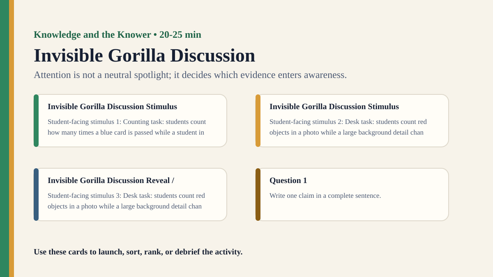

Detailed activity
Invisible Gorilla Discussion
Students complete a selective-attention counting task and examine why obvious evidence can be missed.
Free classroom activity
Big Idea
Attention is not a neutral spotlight; it decides which evidence enters awareness.
Teacher Summary
Students experience inattentional blindness through a simple counting or observation task.
Use the surprise to move from perception as recording to perception as selective attention.
Materials
- Short selective-attention video or teacher-created movement/counting task.
- Private answer slips and reveal slide.
Ready to run
Classroom Resource Pack
Use the printable pack for concrete stimulus cards, a student recording sheet, teacher prompts, and a visual prompt image.
Visual Prompt

Student Prompt
Inspect the Invisible Gorilla Discussion stimulus. Record one first claim, the evidence you used, your confidence, and what would make you revise.
Actual Lesson Questions
| # | Question for students | Teacher cue |
|---|---|---|
| 1 | Write one claim in a complete sentence. | Teacher cue: look for a clear claim, not just a description. |
| 2 | List two pieces of evidence. | Teacher cue: students should name visible words, data, source features, method features, or contextual clues. |
| 3 | Separate observation from interpretation. | Teacher cue: this is where assumptions, framing, models, or perspective usually appear. |
| 4 | Circle one confidence level and justify it. | Teacher cue: confidence is data for the debrief, not a grade. |
| 5 | Name one piece of missing information. | Teacher cue: push for method, source, context, comparison, or definitions. |
| 6 | Answer using the activity as evidence. | Teacher cue: students should move from the classroom example to a general TOK issue. |
Concrete Stimulus Packet
Stimulus
Classroom Observation Scene
A blue notebook sits beside a cracked phone screen. The board says “Evidence ≠ Certainty”. The clock reads 10:42. A red water bottle is half hidden behind a laptop. After 20 seconds, students write what they saw without looking back.
Use this when you need a concrete perception, memory, or confidence stimulus.Stimulus
Invisible Gorilla Discussion Example
Counting task: students count how many times a blue card is passed while a student in a bright scarf crosses the room.
Use this as the activity-specific version of the stimulus.Stimulus
Comparison / Twist Card
Desk task: students count red objects in a photo while a large background detail changes between views.
Reveal after students commit to their first judgement.Teacher Key / Reveal
The key move is not the “right answer”; it is the moment students see how attention is not a neutral spotlight; it decides which evidence enters awareness.
Setup Notes
- Use a short public-domain-style classroom task, or create your own with students passing a soft object while another visible change occurs.
- Tell students to focus on one countable task so the later miss is meaningful rather than random.
Ready-to-Use Examples
- Counting task: students count how many times a blue card is passed while a student in a bright scarf crosses the room.
- Desk task: students count red objects in a photo while a large background detail changes between views.
Run Resources
- Private count slip: target count, unexpected details noticed, confidence rating.
- Reveal slide with the unexpected element circled and a question about attention.
Procedure
- Give students one narrow observation task, such as counting passes or repeated actions.
- Run the short stimulus once without interruption.
- Ask students to record the target count and anything unusual they noticed.
- Reveal the unexpected element and compare what students missed.
- Debrief how task, expectation, and confidence shaped what became evidence.
Teacher Language
- You were not careless; your attention was doing what the task asked it to do.
- What did the task make available as evidence, and what did it make invisible?
TOK Debrief Questions
- Knowledge question: How does attention shape what counts as evidence?
- Can missing evidence be a rational consequence of focusing well?
- Where might expert attention improve knowledge and where might it narrow knowledge?
Knowledge Questions
- How does attention shape what counts as evidence?
- To what extent is perception guided by expectation?
- Can expertise create blind spots as well as insight?
Sample Student Output
- I counted accurately but missed the scarf because it was irrelevant to my task.
- The activity showed that focus improves one kind of knowledge while reducing another.
Exhibition Object Idea
A still image from a selective-attention task with the missed feature highlighted.
Adaptations
- Support: use one obvious unexpected feature.
- Challenge: add two unexpected features and ask which one different students notice.
Extension Tasks
- Students design a fairer observation protocol for an eyewitness or scientist.
- Compare selective attention in sport, medicine, driving, and classroom learning.
Teacher Notes
Avoid making the activity feel like a trick; stress that selective attention is normal and often useful.
The strongest TOK move is to ask when focused attention supports reliable knowledge and when it limits it.